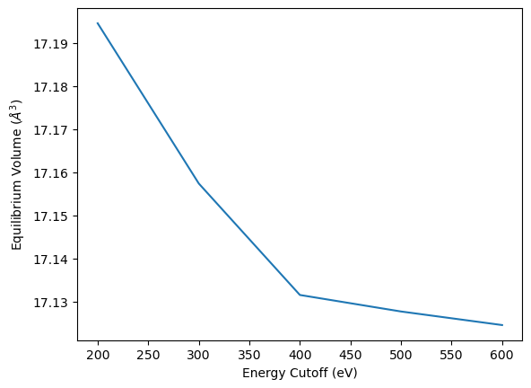
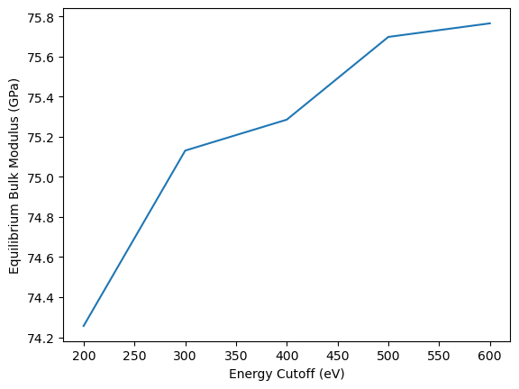
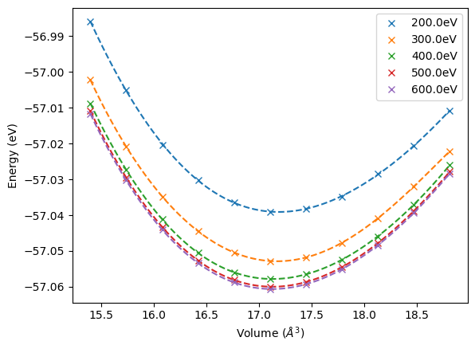
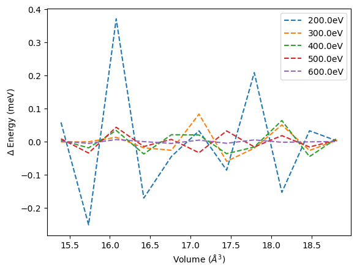

Energy Volume Curve#
While the total energies calculated with DFT are not very useful, the energy differences calculated from these total energies can be applied to calculate a number of material properties. One common example is the calculation of the bulk modulus as the second derivative of the change of energy with volume.
Following the first two tutorials the SPHInX DFT simulation code is used in combination with the pyiron.org workflow framework. The installation of these software packages is explained in the first tutorial. In analogy to the first two tutorials, also the third tutorial starts by importing the Project object in addition to matplotlib and numpy.
At zero temperature the pressure is simply the volume derivative of the total energy, \(P = -\partial E/\partial V\), so an equilibrium structure at zero external pressure corresponds to a minimum of \(E(V)\), i.e. \(\partial E/\partial V|_{V_0} = 0\). The curvature of \(E(V)\) at that minimum is directly related to the (isothermal, here athermal) bulk modulus $\(B_0 = -V\left.\frac{\partial P}{\partial V}\right|_{V_0} = V\left.\frac{\partial^2 E}{\partial V^2}\right|_{V_0}\)\( the resistance of the crystal against a uniform (hydrostatic) compression - the solid-state equivalent of a molecular force constant, except that here the whole simulation cell is compressed or expanded isotropically instead of stretching a single bond. Because \)B_0\( depends on the *second* derivative of \)E(V)$, obtaining it reliably requires more precision than a single total energy or even a first derivative (a force), which is one reason this tutorial revisits the plane-wave energy cut-off convergence from a different angle.
import matplotlib.pyplot as plt
import numpy as np
from pyiron_atomistics import Project
Calculation#
In addition, to interfaces to different simulation codes pyiron also includes GenericMaster jobs which run multiple individual calculation in one job. This is similar to the for-loops used in the previous tutorial. For calculating the energy volume curve users can either write their own for-loop or alternatively they can use the Murnaghan job type. Especially when nesting multiple for-loops these GenericMaster jobs can simplify the workflow.
Internally the Murnaghan job runs a series of static calculations at volumes scaled around the input structure (by default from \(0.9\,V_0\) to \(1.1\,V_0\)) and then fits an analytic equation of state through the resulting \(E(V)\) points to extract the equilibrium volume \(V_0\), energy \(E_0\) and bulk modulus \(B_0\) (and its pressure derivative \(B_0'\)). Besides a simple low-order polynomial fit, which is used by default, dedicated equations of state such as Birch-Murnaghan
$\(E(V) = E_0 + \frac{9V_0B_0}{16}\left[\left(\left(\frac{V_0}{V}\right)^{2/3}-1\right)^3 B_0' + \left(\left(\frac{V_0}{V}\right)^{2/3}-1\right)^2\left(6-4\left(\frac{V_0}{V}\right)^{2/3}\right)\right]\)$
or the Vinet and (the job’s namesake) Murnaghan equations of state are available through the fit_type parameter of the job, and tend to extrapolate more reliably beyond the sampled volume range than a plain polynomial.
A new Project object is created named energy_volume_curve_convergence to separate the calculation from the current tutorial and the previous. Any remaining calculation in the energy_volume_curve_convergence folder are removed using the remove_jobs() function, to provide a fresh start for every execution of the notebook.
pr = Project("energy_volume_curve_convergence")
pr.remove_jobs(recursive=True, silently=True)
Based on a previous iteraction of this tutorial, it is recommended to adjust the lattice constant for Aluminium from the experimental suggestion of a=4.04 to a=4.09. This can depend on the choice of pseudo potential resulting in an overall difference between the prediction from DFT and the measurements from experiment.
structure_Al = pr.create.structure.ase.bulk("Al", a=4.09)
From the study of the energy convergence in dependence of the planewave energy cut-off the range of planewave energy cut-offs is adopted while reducing the sampling density to five steps between the low planewave energy cut-off at 200eV and the high planewave energy cut-off at 600eV.
encut_lst = np.linspace(200, 600, 5)
encut_lst
array([200., 300., 400., 500., 600.])
The outer loop again iterates over the list of planewave energy cutoffs while the internal loop over the different volumes is handled by the Murnaghan job class. In this way no additional loop is required. Once more this highlights the scalability of the pyiron workflow framework.
For the k-point mesh again a rather small mesh of \(2\times2\times2\) is chosen in order to optimize for computational efficiency rather than DFT precision. At the end of each energy volume curve computation the list of volumes, energies as well as the equilibrium volume and equilibrium bulk modulus are stored in corresponding lists.
volume_lst, energy_lst, v0_lst, b0_lst = [], [], [], []
for encut in encut_lst:
job_Al = pr.create.job.Sphinx("spx")
job_Al.structure = structure_Al
job_Al.set_kpoints([2,2,2])
job_Al.set_encut(encut)
job_Al.server.cores = 1
murn = pr.create.job.Murnaghan("murn_encut_{:.0f}".format(encut))
murn.ref_job = job_Al
murn.run()
volume_lst.append(murn.content["output/volume"])
energy_lst.append(murn.content["output/energy"])
v0_lst.append(murn.content["output/equilibrium_volume"])
b0_lst.append(murn.content["output/equilibrium_bulk_modulus"])
The job murn_encut_200 was saved and received the ID: 1
The job murn_encut_200_0_9 was saved and received the ID: 2
The job murn_encut_200_0_92 was saved and received the ID: 3
The job murn_encut_200_0_94 was saved and received the ID: 4
The job murn_encut_200_0_96 was saved and received the ID: 5
The job murn_encut_200_0_98 was saved and received the ID: 6
The job murn_encut_200_1_0 was saved and received the ID: 7
The job murn_encut_200_1_02 was saved and received the ID: 8
The job murn_encut_200_1_04 was saved and received the ID: 9
The job murn_encut_200_1_06 was saved and received the ID: 10
The job murn_encut_200_1_08 was saved and received the ID: 11
The job murn_encut_200_1_1 was saved and received the ID: 12
The job murn_encut_300 was saved and received the ID: 13
The job murn_encut_300_0_9 was saved and received the ID: 14
The job murn_encut_300_0_92 was saved and received the ID: 15
The job murn_encut_300_0_94 was saved and received the ID: 16
The job murn_encut_300_0_96 was saved and received the ID: 17
The job murn_encut_300_0_98 was saved and received the ID: 18
The job murn_encut_300_1_0 was saved and received the ID: 19
The job murn_encut_300_1_02 was saved and received the ID: 20
The job murn_encut_300_1_04 was saved and received the ID: 21
The job murn_encut_300_1_06 was saved and received the ID: 22
The job murn_encut_300_1_08 was saved and received the ID: 23
The job murn_encut_300_1_1 was saved and received the ID: 24
The job murn_encut_400 was saved and received the ID: 25
The job murn_encut_400_0_9 was saved and received the ID: 26
The job murn_encut_400_0_92 was saved and received the ID: 27
The job murn_encut_400_0_94 was saved and received the ID: 28
The job murn_encut_400_0_96 was saved and received the ID: 29
The job murn_encut_400_0_98 was saved and received the ID: 30
The job murn_encut_400_1_0 was saved and received the ID: 31
The job murn_encut_400_1_02 was saved and received the ID: 32
The job murn_encut_400_1_04 was saved and received the ID: 33
The job murn_encut_400_1_06 was saved and received the ID: 34
The job murn_encut_400_1_08 was saved and received the ID: 35
The job murn_encut_400_1_1 was saved and received the ID: 36
The job murn_encut_500 was saved and received the ID: 37
The job murn_encut_500_0_9 was saved and received the ID: 38
The job murn_encut_500_0_92 was saved and received the ID: 39
The job murn_encut_500_0_94 was saved and received the ID: 40
The job murn_encut_500_0_96 was saved and received the ID: 41
The job murn_encut_500_0_98 was saved and received the ID: 42
The job murn_encut_500_1_0 was saved and received the ID: 43
The job murn_encut_500_1_02 was saved and received the ID: 44
The job murn_encut_500_1_04 was saved and received the ID: 45
The job murn_encut_500_1_06 was saved and received the ID: 46
The job murn_encut_500_1_08 was saved and received the ID: 47
The job murn_encut_500_1_1 was saved and received the ID: 48
The job murn_encut_600 was saved and received the ID: 49
The job murn_encut_600_0_9 was saved and received the ID: 50
The job murn_encut_600_0_92 was saved and received the ID: 51
The job murn_encut_600_0_94 was saved and received the ID: 52
The job murn_encut_600_0_96 was saved and received the ID: 53
The job murn_encut_600_0_98 was saved and received the ID: 54
The job murn_encut_600_1_0 was saved and received the ID: 55
The job murn_encut_600_1_02 was saved and received the ID: 56
The job murn_encut_600_1_04 was saved and received the ID: 57
The job murn_encut_600_1_06 was saved and received the ID: 58
The job murn_encut_600_1_08 was saved and received the ID: 59
The job murn_encut_600_1_1 was saved and received the ID: 60
Analysis#
As a first step the convergence of the equilibrium volume and the equilibrium bulk modulus can be plotted over the list of planewave energy cut-offs. This follows the same representation as previously in the second tutorial for the energy convergence.
plt.plot(encut_lst, v0_lst)
plt.xlabel("Energy Cutoff (eV)")
plt.ylabel("Equilibrium Volume ($\AA^3$)")
<>:3: SyntaxWarning: invalid escape sequence '\A'
<>:3: SyntaxWarning: invalid escape sequence '\A'
/tmp/ipykernel_98/2394324513.py:3: SyntaxWarning: invalid escape sequence '\A'
plt.ylabel("Equilibrium Volume ($\AA^3$)")
Text(0, 0.5, 'Equilibrium Volume ($\\AA^3$)')

plt.plot(encut_lst, b0_lst)
plt.xlabel("Energy Cutoff (eV)")
plt.ylabel("Equilibrium Bulk Modulus (GPa)")
Text(0, 0.5, 'Equilibrium Bulk Modulus (GPa)')

While the equilibrium Volume decreases with increasing energy cutoff the bulk modulus increases with increasing energy cutoff. From these results the question arises how these results are related to the energy convergence at the different volumes, following the general notion that relative energies in DFT calculation converge faster than total energies. As a first step of this analyis the individual energy volume curves are plotted by fitting the corresponding energy volume curves.
This systematic drift with \(E_\text{cut}\) has a specific name: because the reciprocal lattice vectors \(\mathbf{G}\) scale with the volume of the simulation cell, a fixed planewave energy cut-off includes a slightly different, discontinuously changing number of plane waves as the volume is varied (recall \(\frac{\hbar^2}{2m_e}|\mathbf{k}+\mathbf{G}|^2 \leq E_\text{cut}\) from the previous tutorial). This introduces a small, spurious contribution to the pressure known as the Pulay stress, which biases both the equilibrium volume and the bulk modulus extracted from the fit. Increasing \(E_\text{cut}\) shrinks the Pulay stress, which is why both quantities are only meaningful once they have converged with respect to the planewave energy cut-off, exactly as demonstrated by the two figures above.
color_ind = 0
for vol, eng, encut in zip(volume_lst, energy_lst, encut_lst):
plt.plot(vol, eng, "x", label=str(encut) + "eV", color="C" + str(color_ind))
fit = np.polyfit(vol, eng, 5)
vol_lst = np.linspace(np.min(vol), np.max(vol), 100)
plt.plot(vol_lst, np.poly1d(fit)(vol_lst), "--", color="C" + str(color_ind))
color_ind += 1
plt.legend()
plt.xlabel("Volume ($\AA^3$)")
plt.ylabel("Energy (eV)")
<>:9: SyntaxWarning: invalid escape sequence '\A'
<>:9: SyntaxWarning: invalid escape sequence '\A'
/tmp/ipykernel_98/2432637635.py:9: SyntaxWarning: invalid escape sequence '\A'
plt.xlabel("Volume ($\AA^3$)")
Text(0, 0.5, 'Energy (eV)')

When subtracting the fit from the calculated energy volume pairs we find that the energy is scattered around the fit. The gaussian distribution of the energy is expected based on the choice of least square fit. Still when carefully resolving the difference between to very close volumes jumps can be found related to the jumps from adding new plane waves. Nevertheless these effects are in the order of less than 1meV.
color_ind = 0
for vol, eng, encut in zip(volume_lst, energy_lst, encut_lst):
fit = np.polyfit(vol, eng, 5)
plt.plot(vol, (np.poly1d(fit)(vol)-eng) * 1000, "--", label=str(encut) + "eV", color="C" + str(color_ind))
color_ind += 1
plt.legend()
plt.xlabel("Volume ($\AA^3$)")
plt.ylabel("$\Delta$ Energy (meV)")
<>:7: SyntaxWarning: invalid escape sequence '\A'
<>:8: SyntaxWarning: invalid escape sequence '\D'
<>:7: SyntaxWarning: invalid escape sequence '\A'
<>:8: SyntaxWarning: invalid escape sequence '\D'
/tmp/ipykernel_98/4187569174.py:7: SyntaxWarning: invalid escape sequence '\A'
plt.xlabel("Volume ($\AA^3$)")
/tmp/ipykernel_98/4187569174.py:8: SyntaxWarning: invalid escape sequence '\D'
plt.ylabel("$\Delta$ Energy (meV)")
Text(0, 0.5, '$\\Delta$ Energy (meV)')

Conclusion#
The convergence of total energies alone is insufficient, rather for any property calculated from a DFT calculation a separate convergence test is required. The convergence for the equilibrium bulk modulus and the equilibrium volume are just two examples.
Together the three tutorials illustrate the three types of convergence that have to be checked for any plane-wave DFT calculation: the electronic (SCF) convergence of the Kohn-Sham equations for a fixed basis (tutorial 1), the basis-set convergence with respect to the planewave energy cut-off and the k-point mesh (tutorial 2), and the convergence of derived structural or elastic properties such as the equilibrium volume and bulk modulus, which can converge differently - and sometimes more slowly - than the total energy itself (this tutorial).
Exercises#
In analogy to the two previous exercises you can compare the convergence of different elements for the bulk modulus and equilibrium volume.
Furthermore, you can analyse the dependence of the plane wave energy cut-off convergence and the kpoint mesh convergence? How does the convergence of the plane wave energy cut-off change when you increase the kpoint mesh or how does the kpoint mesh convergence change when you increase the plane wave energy cut-off?
Finally, how does the computational cost change with increasing convergence parameters? The computational cost is available in the job table
pr.job_table()in the columntotalcputime. While symmetry reduces the total number of kpoints which are evaluated, you can access the calculated kpoints for a given job withlen(job.content["output/generic/dft/kpoints_cartesian"]).